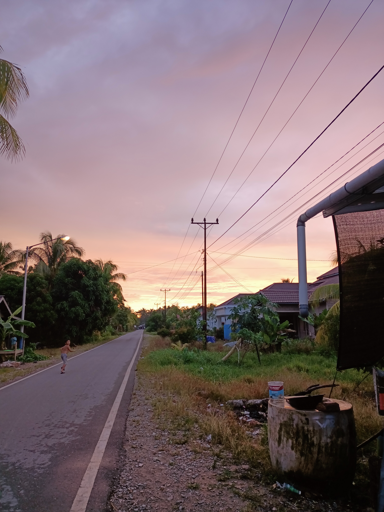
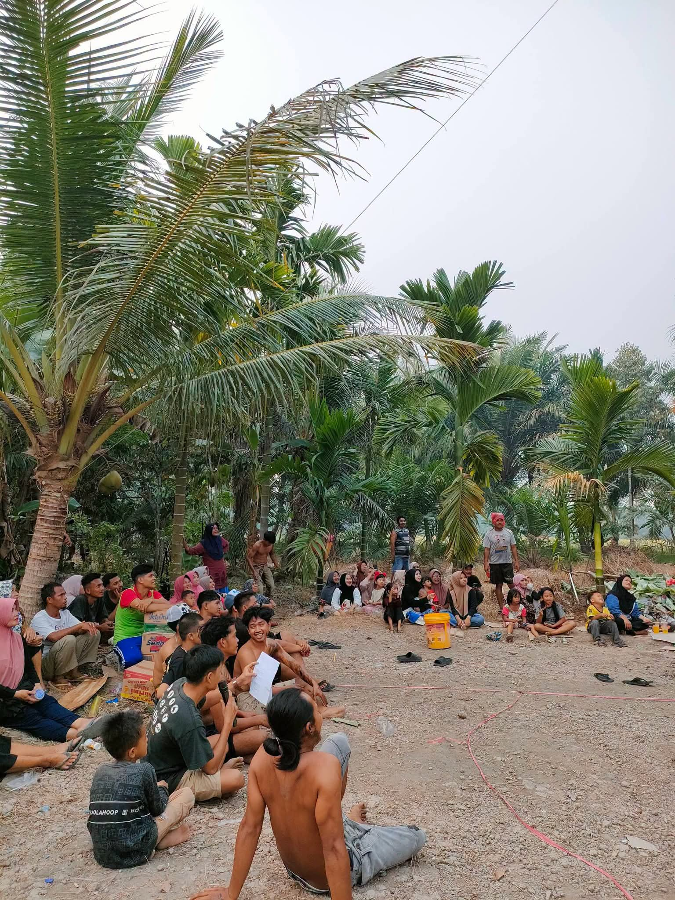
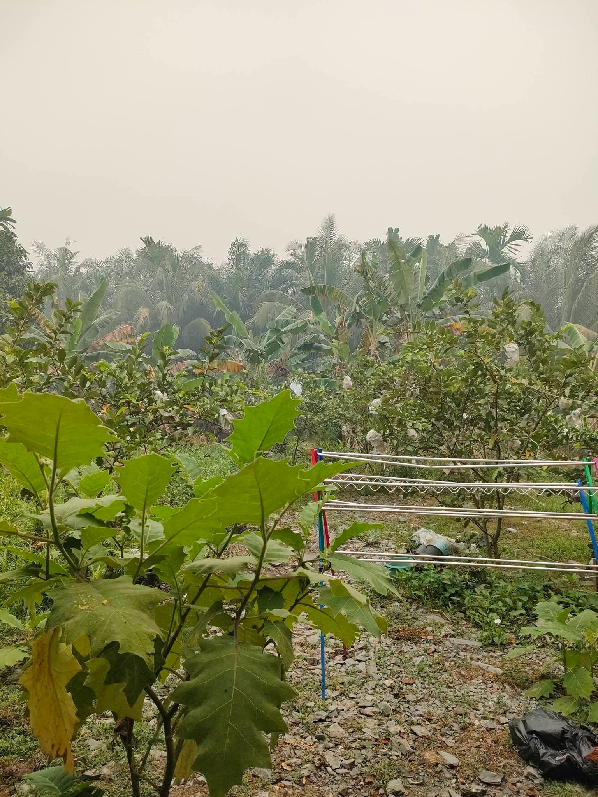
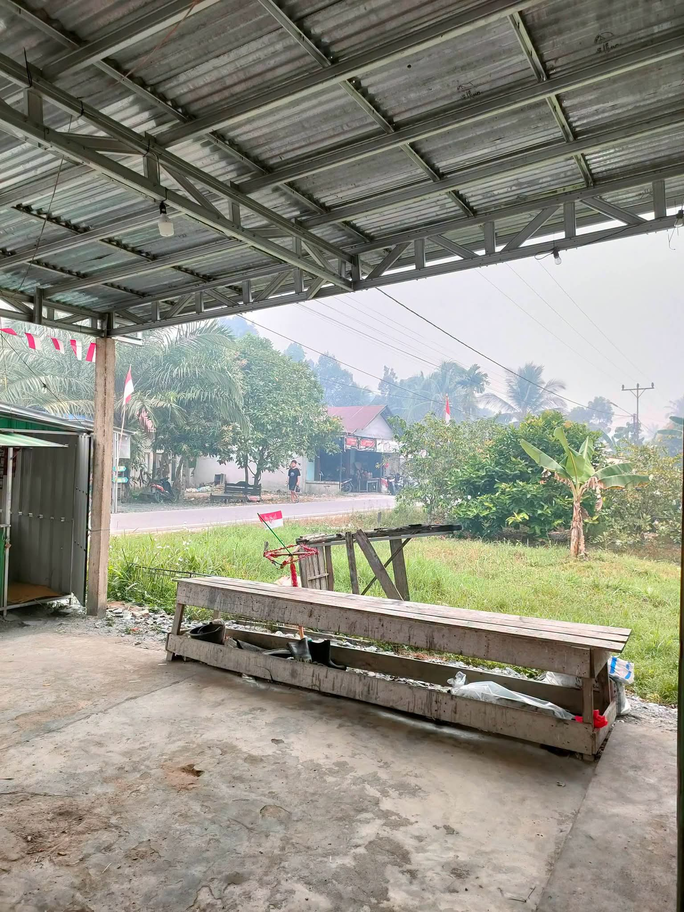

Dusun Karya Bhakti
Pesona Desa Maktangguk
Menjelajahi keindahan alam, kehidupan masyarakat yang ramah, dan potensi tersembunyi Desa Maktangguk, Kabupaten Sambas, Kalimantan Barat.
Jelajahi Desa →
Selamat Datang
Keindahan Maktangguk
Desa yang asri dan penuh kehangatan masyarakat.
Desa Maktangguk merupakan salah satu desa di Kabupaten Sambas, Kalimantan Barat. Suasana pedesaan yang tenang, lingkungan yang hijau, serta kebersamaan masyarakat menjadi pesona utama desa ini.
Pemerintah desa terus berupaya meningkatkan kualitas pelayanan publik serta mengoptimalkan sektor pertanian dan wisata lokal demi kemajuan bersama.
Potensi Utama Desa
Sektor unggulan yang menjadi pilar perekonomian dan kebudayaan warga Desa Maktangguk
Hasil Alam Melimpah
Pengolahan komoditas lokal seperti padi, kelapa, dan tanaman perkebunan yang menjadi mata pencaharian utama warga.
Sungai & Pemandangan Asri
Bantaran sungai yang alami serta pemandangan hijau sekeliling desa yang menyegarkan pikiran.
Kearifan Lokal
Tradisi gotong royong dan kesenian daerah yang tetap dijaga serta diwariskan antar generasi.
Jejeak Perkembangan
Tahapan penting dalam sejarah dan pembangunan Desa Maktangguk
Awal Pemukiman
Awal mula terbentuknya kawasan pemukiman warga di tepi aliran sungai utama Maktangguk.
Pembangunan Akses Jalan
Peningkatan infrastruktur darat yang menghubungkan antar dusun dan pusat pemerintahan kecamatan.
Peluncuran Portal Digital
Implementasi teknologi informasi terpadu untuk pelayanan masyarakat dan transparansi informasi desa.
Data Transparansi Desa
Rincian statistik wilayah administratif dan kepemerintahan
| Nama Dusun | Kepala Dusun | Jumlah KK | Status Wilayah |
|---|---|---|---|
| Dusun Karya Bhakti | Ahmad Sudrajat | 120 KK | Aktif |
| Dusun Makmur | Siti Nurhaliza | 95 KK | Aktif |
| Dusun Sejahtera | Bambang Irawan | 110 KK | Aktif |
Galeri Kegiatan
Dokumentasi momen kebersamaan dan keindahan sudut Desa Maktangguk




"Alam yang indah, masyarakat yang ramah, dan budaya yang berharga."
Maktangguk, sebuah desa dengan pesona sederhana yang layak untuk dikenang.